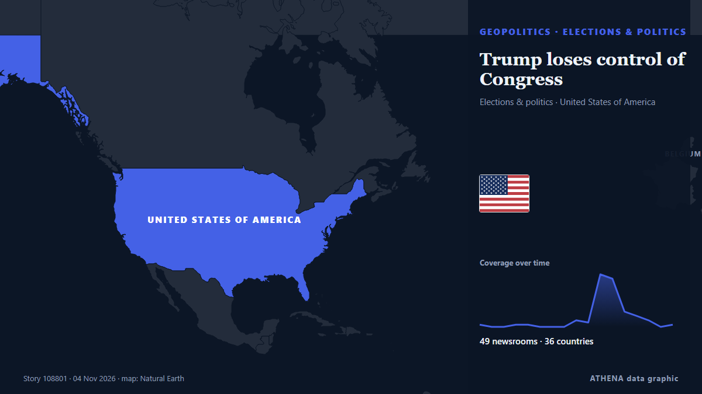

ATHENA Glaux Intelligence — Анализ мировых новостей — каждая цифра объяснена
Мировые новости, проверенные по разным странам
ATHENA Glaux следит за сотнями новостных изданий по всему миру и объединяет их публикации в события. По каждому событию видно, сколько изданий в скольких странах о нём сообщили, кто был первым, и оценку риска с её причинами — с обновлением каждые 30 минут, на семи языках.
В прямом эфире новостейMeghan Markle’s father arrested, charged over child abuse material66 изданий · 31 страна · Риск 5.6 · Источники: Arab News, The Guardian

ГеополитикаTrump loses control of Congress
If Republicans lose control of Congress, the rest of his time in office is likely to be consumed by Democratic-led investigations into his administration and his business dealings, and possibly even… из PBS NewsHour
Заголовки приводятся на английском языке, как они были опубликованы.
Trump says US will end military aid to Israel by end of the year
Says democrats, left-wing politicians using US financial support to Israel as a talking point to criticise Republicans. из Express Tribune
Trump names Stephen Miller chief of staff, replacing Susie Wiles
President Trump on Friday announced his appointment of Stephen Miller as his chief of staff, to replace Susie Wiles. из Los Angeles Times (World)

Сегодня в цифрах
| 23:00 | 505 |
|---|---|
| 00:00 | 463 |
| 01:00 | 520 |
| 02:00 | 367 |
| 03:00 | 604 |
| 04:00 | 460 |
| 05:00 | 431 |
| 06:00 | 0 |
| 07:00 | 0 |
| 08:00 | 0 |
| 09:00 | 24 |
| 10:00 | 664 |
| 11:00 | 555 |
| 12:00 | 478 |
| 13:00 | 637 |
| 14:00 | 1478 |
| 15:00 | 405 |
| 16:00 | 771 |
| 17:00 | 591 |
| 18:00 | 694 |
| 19:00 | 365 |
| 20:00 | 577 |
| 21:00 | 716 |
| 22:00 | 467 |
Риск сегодняшних событий
US Midterms: Democrats take control of US Congress as voters reject Trump’s Republicans
Democrats have taken control of both chambers of the United States Congress in the November 3, 2026, midterm elections, dealing a major political setback to President Donald Trump and his Republican… из Vanguard
Middle Israel: Netanyahu's election lies pose a dangerous threat to Israeli democracy - opinion
Former deputy governor tells Central Banking prime minister’s proposals are ‘stupid’ and ‘crazy’ из Central Banking
Pope has voted in the midterms says Vatican
(ANSA) - ROME, 30 OTT - Pope Leo XIV has voted in the US midterm elections, the Vatican said Friday. из ANSA English
Больше всего публикаций
- Экономика и рынки
Binance $6.3 Billion Heist to Prompt Closer Scrutiny by Insurers
53 страны · 126 изданий
Новые сигналы
- Резкий рост · АктивенLima
- Резкий рост · АктивенNajib
- Резкий рост · АктивенOval Office
- Резкий рост · АктивенTundu Lissu
- Резкий рост · АктивенStephen Miller
Официальные предупреждения
- Red notification for tropical cyclone FOUR-26. Population affected by Category 1 (120 km/h) wind speeds or higher is 1.156 million .Red · GDACS ·
- M 6.1 - Fiji regionM6.1 · USGS ·
- Cyber chief: UK facing AI-powered attacks on critical infrastructure within two yearsadvisory · UK National Cyber Security Centre ·
- M 6.0 - 165 km NW of Port-Olry, VanuatuM6.0 · USGS ·
ATHENA в Telegram
Вступите бесплатно в группу ATHENA Glaux и получайте новости сразу после их публикации здесь:
- срочные события с риском 6 и выше
- ежечасная сводка главных событий
- обновления мониторинга рисков
- ежедневная сводка каждое утро в 10:00 (по Афинам)
- недельный прогноз
- официальные предупреждения, ранние сигналы и растущие риски
Нажмите кнопку, откроется Telegram, нажмите «Вступить». Публикации на английском; можно отключить звук или выйти в любой момент. Нет Telegram? Бесплатно на telegram.org.
Мониторинг рисков
Ещё ›Глобальные риски — неделя 45, 2026 (2–8 нояб.) ›
Геополитика, политика и безопасность
Ещё ›Putin seizes control of Japan Tobacco’s Russian assets
Japan Tobacco is the latest foreign company to lose control of Russian operations in a widening crackdown by the Kremlin. из The Straits Times
- Выборы и политика
Muslim candidates make history in US midterm elections
- Выборы и политика
Abdul El-Sayed's victory proves supporting Palestine is no electoral liability
- Выборы и политика
Keisha Bottoms makes history as first Black woman elected US governor
- Выборы и политика
Hegseth vows to keep fighting from Pentagon, defends Iran war
Экономика, финансы и рынки
Ещё ›- Банки и кредит
Israel set to expel 6 detained Italians Saturday says Farnesina
- Криптовалюты и цифровые активы
Binance $6.3 Billion Heist to Prompt Closer Scrutiny by Insurers
- Прогнозы и рецессия
United States Unit Labor Costs below forecasts (0.6%) in 3Q: Actual (-0.7%)
- Долг и бюджеты
Carney heads to Winnipeg to tout budget plan to end homelessness in 10 years
Торговля, промышленность и инфраструктура
Ещё ›Judge blocks construction of Trump’s massive arch after federal agency approval
A federal judge has temporarily blocked construction of US President Donald Trump's "triumphal arch" in Washington. из MyJoyOnline
- Авиа, ж/д и дороги
Europe bomb hoaxes spread to media, more flights hit
- Авиа, ж/д и дороги
Pope Leo XIV Departs for First Latin America Journey to Uruguay Argentina and Peru
- Авиа, ж/д и дороги
European Air Traffic Targeted by New Threats in at Least 3 Incidents
- Авиа, ж/д и дороги
Aer Lingus passenger's 'teary' moment as Dublin to Rome flight diverted by bomb threat
Энергетика, ресурсы и экология
Ещё ›Singapore to end N95 mask distribution on Saturday as haze abates
The Ministry of Health will deactivate both the Public Health Preparedness Clinic Scheme and the Haze Subsidy Scheme from Nov 12. из CNA (Channel NewsAsia)
- Климат и климатическая политика
2026 'most likely' to be second-hottest year on record: EU monitor
- Нефть и газ
ADNOC signs LNG deal with Gujarat Energy to supply 4 million tonnes over 10 years
- Электроэнергия
Greece Issues NAVTEX to Resume Undersea Electricity Cable Surveys With Cyprus
- Нефть и газ
'E20 Actually Has Over 30% Ethanol': Karnataka Minister Cites Petrol Tests, Demands Consumer Relief Fund
Технологии, ИИ и кибербезопасность
Ещё ›Protesters break into Microsoft AI data centre site in Amsterdam
More than 100 activists broke into a Microsoft data centre construction site in Amsterdam. из Al Jazeera English
- СМИ и дезинформация
Russell Brand’s barrister reports himself to regulator after tirade against journalist
- Регулирование технологий
EU says ‘rabbit hole’ video feeds on TikTok violate its digital rules
- СМИ и дезинформация
Channel 4 axes Married At First Sight UK after review following misconduct claims
- Кибербезопасность
Jack Grealish agreement reached as Everton manager David Moyes told what to do
Бизнес, компании и инвестиции
Ещё ›Tesla To 'Wind Down' Cybertruck Production Next Year: Musk
Tesla will stop building the truck at its Texas factory around the middle of 2027 to free up space for its Cybercab robotaxi, Musk said. из NDTV
Здоровье, наука и исследования
Ещё ›Wisconsin Baby Dies of Measles in First State Death in 36 Years
Wisconsin reported its first measles death in more than three decades on Thursday, the latest state to suffer a fatality from a virus that was long eradicated in the US but recently surged back amid… из Livemint
- Медицинские исследования
Pope Leo begins a 12-day, 3-country South America tour after his cancer surgery
- Фарма и биотех
Iraq helps UAE arrest 20 in Captagon bust
- Системы здравоохранения
Child (6) becomes latest victim of Waterford arson attack on home
- Фарма и биотех
Mexican judge arrested over alleged $2M bribe to release Ryan Wedding's second-in-command
Общество, право и госполитика
Ещё ›The leader of a Kenyan doomsday cult is sentenced to 200 years in prison
Cult leader Paul Mackenzie was convicted of murdering 190 children and one adult after he ordered his followers to starve themselves to death in order to meet Jesus. из NPR
- Преступность и коррупция
Meghan Markle’s father arrested, charged over child abuse material
- Суды и правосудие
Tanzania opposition leader Tundu Lissu awaits verdict in treason trial
- Аварии и ЧП
Bus carrying schoolchildren crashes in France, killing 2 and injuring 16
- Суды и правосудие
California governor commutes sentences for state’s 548 death row inmates
Спорт
Ещё ›WTA takes blame after Pegula comments on Andreeva get livestreamed
WASHINGTON: The Women’s Tennis Association (WTA) on Thursday said it takes “full responsibility” for failing to inform players about active microphones on practice courts after private comments by… из Arab News
- Футбол
Japan FA honorary president Tashima to challenge Infantino for FIFA presidency
- Футбол
‘It’ll Never Be Forgotten’, Flamingos Captain On Hopes Of Winning U-17 World Cup
- Футбол
Nothing personal says England coach Thomas Tuchel as he overlooks Cole Palmer
- Футбол
FIFA visits Portugal as preparations for 2030 World Cup continue
Культура, люди и стиль жизни
Ещё ›Italian chef sacked for refusing to put pineapple on pizza, says it insulted his culture
An Italian chef in Australia has lost an unfair dismissal claim after being sacked for, among other workplace issues, refusing to serve ham and pineapple pizza, describing the topping as an insult to… из Vanguard